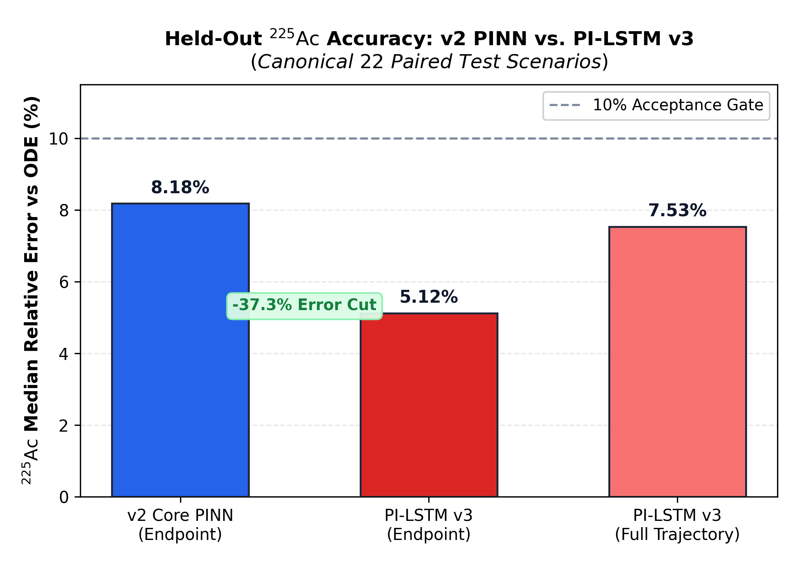
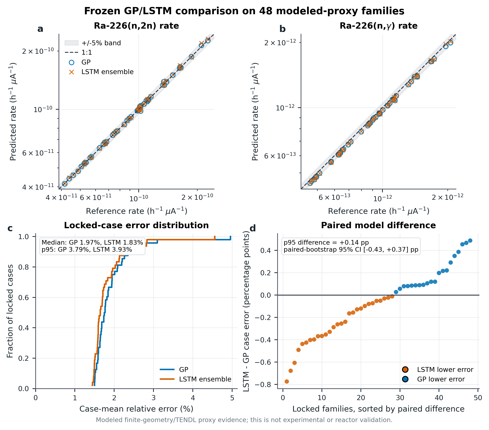

Who this is for
You are a high-school student who wants professional command of nuclear production kinetics, stiff ODEs, and scientific machine learning — without fake expertise.
Module 0 / Contract Day 1
In 30 days you should be able to explain every idea in this project to a teacher who has never seen a nuclear equation, then answer a follow-up as if you built it.
You are a high-school student who wants professional command of nuclear production kinetics, stiff ODEs, and scientific machine learning — without fake expertise.
Every term has two boxes: plain English and in this project. Do not skip the first box. Professionals can still say the simple version.
If a sentence sounds impressive but your experiment did not measure it, it is not ready to say. Overclaiming is the fastest way to lose a teacher or a judge.
If forgetting one word collapses the answer, you memorized a script. Explain each idea three ways: to a 9th grader, to your AP teacher, and to a nuclear engineer.
This course builds understanding. The ISEF defense masterclass is the later spoken-judge version. Learn here first.
Module 0 / North star Day 1
If you cannot say this, nothing else in the project is attached to a purpose.
Failed: ignored stiffness, invented negative atoms.
Learned physics residuals; still had expert-flagged limits.
Predicts five-isotope time histories and ranks schedules.
Predicts two reaction rates with uncertainty and rejection.
Internal modeled evidence is strong. External transfer is unresolved.
Filter, then verify. Never “the AI makes the medicine.”
Module 1 / From zero Day 1–2
| Name | Protons (Z) | Nucleons (A) | Role in the story |
|---|---|---|---|
| Radium-226 | 88 | 226 | The target material you irradiate |
| Radium-225 | 88 | 225 | The (n,2n) product; decays into the medicine |
| Actinium-225 | 89 | 225 | The desired medical isotope |
| Radium-227 | 88 | 227 | The (n,γ) product; 42.2-minute “fast clock” |
| Actinium-227 | 89 | 227 | Long-lived competing impurity of concern |
Two nuclei: 88p/138n for Ra-226, 88p/137n for Ra-225. Then 89p/136n for Ac-225.
Module 1 / Clocks Day 2
Probability per unit time that one nucleus decays. Units: 1/time, for example h-1.
Decays per second, not “how many atoms.” One becquerel (Bq) is one decay per second. A curie is 3.7×1010 Bq.
A timestamp mismatch can look like a model error. Always name the isotope and the exact clock time of an activity.
Ac-225 T½ = 9.920 d. Compute λ in h^-1. Then if N is 1e12 atoms, compute A in Bq.
Module 1 / Your numbers Day 2
| Nuclide | Half-life used in the reduced model | Why it matters |
|---|---|---|
| Ra-226 | ~1,600 years (NuDat v2: 1603 ± 8 y) | Almost a permanent feedstock on human timescales |
| Ra-225 | 14.8 days (NuDat v2: 14.9 ± 2 d) | The waiting room before Ac-225 appears |
| Ac-225 | 9.920 days (NuDat v2: 10.0 ± 1 d) | The medical product clock; decays during shipping too |
| Ra-227 | 42.2 minutes | The stiff spike that vanilla networks missed |
| Ac-227 | 21.772 years | Long-lived impurity that does not vanish after harvest |
Training mostly used the round literature values. In July 2026 you fetched live NuDat values. Small shifts, but a judge can check, so you documented them.
Module 2 / Motivation Day 3
Your project does not treat patients. The medical story is why Ac-225 is valuable enough that production planning is a real scientific problem.
Cells that grow out of control. Metastatic disease has spread. Some tumors resist chemo and ordinary radiation because they can repair isolated DNA damage.
Fast electrons. Relatively long range in tissue (millimeters). Lower linear energy transfer. Can cause single-strand DNA breaks that cells may repair, and can irradiate nearby healthy tissue.
A helium-4 nucleus (2 protons + 2 neutrons). Heavy, short range (tens of micrometers, a couple of cell diameters), very dense ionization. Tends to cause complex double-strand DNA breaks.
Kratochwil 2016 and Morgenstern reviews are the clinical context. You are not a physician.
Module 2 / The product Day 3
You may say the cascade releases multiple MeV-scale alphas. Do not turn “28 MeV” into a patient-outcome claim.
Module 2 / Why production Day 4
Legacy 229Th stocks decay into Ac-225. Reliable but tiny. Cannot meet large demand.
Proton, deuteron, or photon routes, including Berkeley’s deuteron-on-beryllium neutron source on Ra-226. Flexible, often small targets.
Irradiate Ra-226 in a neutron field. Fast neutrons favor (n,2n). Thermal neutrons favor capture to Ac-227. This is the path your reduced equations study.
It can come from legacy materials, but it is radioactive source material. Do not casually call every Ra-226 target “nuclear waste.”
Module 3 / The map Day 5
Desired branch — medicine
Competing branch — impurity of concern
Draw this twice from memory. The second drawing is the real test.
Module 3 / Collision language Day 6
Fluence is flux integrated over time: total neutrons per area. Berkeley needs fluence, not only a flux slogan.
Module 3 / Energy Day 6
Neural nets like smooth, low-frequency patterns. A sharp “off below 6.42, on above” is hard for them. That is why energy was passed through sine/cosine Fourier features (Tancik et al.).
| Source | What it told you about σ(n,2n) |
|---|---|
| v1 training sigmoid | Saturated near 27 mb — about 28× too small at 14 MeV versus evaluated tables |
| JENDL-5 / ENDF/B-VIII.0 | Pointwise evaluated curve: threshold 6.4218 MeV, peak 2.53 b at 10 MeV, 755.7 mb at 14 MeV |
| O’Connor & Perkin 1960, EXFOR 21405 | The only experimental (n,2n) point: 1.60 ± 0.20 b at 14.5 MeV |
| Joyo-calibrated effective σ | ~1.44 mb — a spectrum-effective number, not a 14 MeV measurement |
Solver truth is not nature truth.
Module 3 / Calculus idea Day 8
You do not need to be a calculus expert. You need this one sentence: every isotope’s equation is sources minus sinks.
An arrow pointing into the isotope. For Ra-225, the source is (n,2n) on Ra-226: +k2n N226.
An arrow pointing out. For Ra-225, the sink is its own decay: −λ225 N225.
Draw arrows in as plus, arrows out as minus. That is the whole method.
Module 4 / The model Day 9
Five nuclides, supplied or learned rates, decay, (n,2n), (n,γ).
Neutron transport through real geometry, heat, target melting, wet chemistry, recovery yield, shipping, clinical dose, CAD of a specific facility.
Historical name for radioactive-chain inventory equations. You can say “coupled decay-and-production ODEs.”
Module 4 / Numerical physics Day 10
The system has a very fast process and a very slow process at the same time. If you take big time steps, the fast piece explodes numerically. If you take tiny steps, the slow piece takes forever to compute.
A vanilla neural net averaged over the fast Ra-227 spike, missed it, and predicted negative inventories because nothing forced mass or positivity. That is “hallucinating atoms.”
You may mention that naive forward Euler needs tiny steps for the fast eigenvalue. Do not invent a 40-hour cluster sweep unless you timed it.
Module 4 / What “true” means Day 11
| Reference | What it is | What it proves | What it does not prove |
|---|---|---|---|
| Matrix exponential | Exact solution of the linear chain for constant rates | Propagation of the five equations is correct | That rates or the chain are complete physics |
| Radau | Implicit stiff ODE integrator (scipy) | Accurate numerical solution of the declared ODEs | Reactor or experimental truth |
| OpenMC / SCALE / ORIGEN | Transport + large depletion networks | Much richer facility-style calculation | Anything about your model until you compare directly |
| IAEA Isotopia | International production-planning tool (Engle recommendation) | Community benchmark to compare against | That your surrogate replaces it |
| Joyo papers | Reactor simulation / planning studies | Order-of-magnitude external context | That your default ODE spectrum is Joyo |
| Berkeley / Morrell | Real accelerator-neutron experiment | External evidence at two energies | Universal reactor or clinical validation |
Do not call Radau output “reactor data” or V4 TENDL proxy “OpenMC data.”
Module 4 / Hygiene Day 12
| Quantity | SI-ish unit | Common trap |
|---|---|---|
| Inventory N | atoms, or mol | Confusing atoms with grams or with activity |
| Activity A | Bq (also Ci, µCi) | Missing the reference time (EOB vs after cooling vs after chemistry) |
| Flux φ | n·cm-2·s-1 | Using a core-average flux as if it were the above-threshold flux |
| Fluence | n·cm-2 | Omitting beam-current history |
| Cross section | b or cm2 | Using 14 MeV σ as a reactor-average σ |
| Energy | eV, keV, MeV | Thermal 0.0253 eV vs 14 MeV fusion-like neutrons vs 33–40 MeV deuterons |
Published recovered activities were about 1.4 and 0.7 µCi at 33 and 40 MeV. Produced activity would be higher. Your first reconstruction overpredicted by ~600× and sat outside V3 support.
Convert 0.7 µCi to Bq, then to atoms of Ac-225 using λ from T½ = 9.920 d.
Module 5 / From zero Day 15
An input. Time, flux, energy, distance, starting inventory.
The answer you want, here a trajectory or two reaction rates. In this project, labels often come from Radau, not from a hospital.
The adjustable numbers inside the network. Not nuclear weights. Not statistical survey weights unless you say so.
A score of wrongness. Training tries to lower it. A low loss is not automatically physical truth.
One pass through the training set. More epochs can overfit. Best epoch is a choice that must not peek at the final test.
Memorizing training cases so new cases get worse. Your checkpoint crisis was a cousin of this: optimistic validation.
Call it solver-generated modeled data. Valid for method testing; weaker than independent experiment.
Module 5 / Three tools Day 16
Physics-informed is a training/structure idea. You can have a PINN-MLP or a PI-LSTM.
Module 5 / Experimental design Day 19
Fits weights.
Chooses checkpoint or settings.
Sizes uncertainty intervals. Does not retrain the mean model.
Judges after everything is frozen.
Fixes pseudorandom initialization. Seed 42 is not a physics constant. Multiple seeds test luck. V3’s strongest result is still one independent seed. V4 used five LSTM seeds: 42, 314, 1618, 2026, 2718.
Weights and decision rules stop changing before the final look at the test. If you tune after seeing the answer, the test is no longer a test.
Train learns. Selection chooses. Calibration sizes. Test judges.
Module 5 / Physics-informed Day 17
It only enforces the equations you coded. Wrong σ(E), missing transport, or a metric mismatch (train on trajectories, score endpoints) can still fail. Sprint-6 and endpoint-collapse logs exist for that reason.
Cite PINNs as established. You did not invent the class.
Module 5 / Architecture Day 18
Pass energy and time through sines and cosines at several frequencies. Helps the net see sharp thresholds and fast transients instead of only smooth curves. V3: 8 energy bands, later 16 time bands.
Time zero is locked to the input inventory. Stops “mass from nowhere” at t = 0. α uses a learnable per-species timescale.
Punish interval imbalance instead of instantaneous dN/dt. Jaden Palmer pushed this after V2 overshoots. Limit: trapezoid is approximate on long log-spaced steps for 42.2-minute Ra-227.
Ac-225 is tiny next to Ra-226. Without balancing, the loss ignores the medicine. Divide each residual by that row’s scale so trace species count.
Jaden: randomly dropping neurons wrecks physical consistency. Replaced by conformal / later calibration ideas.
Module 5 / Safety Day 20
How close is the point prediction? Median and p95 relative error.
How often does the interval contain the true answer? V4 calibrated joint coverage: 95.8% (46/48) for both models.
Out-of-distribution: an input unlike training. The guard refused 184/184 constructed outside-range cases and falsely rejected 0/48 locked in-domain families.
About 95% of errors are at or below this tail number. A pretty median can hide a disastrous tail that mis-ranks schedules.
Module 6 / Lived history Day 22
If a teacher asks “why physics-informed?”, this is the answer. Not a slogan. A corpse of a model.
MLP maps time, flux, and energy to five concentrations. Ordinary deep learning. No Bateman structure.
AP Research and ISEF both reward inquiry. Failure that taught you something is evidence of method, not shame.
Module 6 / Expert stress test Day 22
| His critique | What you changed |
|---|---|
| MC dropout randomly killing neurons is not credible epistemic UQ for physics | Dropped MC dropout; moved toward conformal / calibrated intervals |
| Differential dN/dt loss amplifies noise and stiffness; caused overshoots | Integrated trapezoidal physics loss (Nasiri & Dargazany Reduced-PINN) |
| Need a real time-series baseline, not only “PINN vs ODE” | LSTM backbone and later a parameter-matched MLP control |
| Need empirical or analytical benchmarks, not only Radau self-consistency | Literature CSV, Joyo calibration study, Berkeley attempt |
Fourier energy, adaptive activations, Jacobian balancing. Held-out Ac-225 near 4.5% versus Radau on the recorded v2 protocol. 6/6 internal gates on the recorded checkpoint. Streamlit demo.
The app checkpoint and the old validation JSON have not always shared the same SHA-256. Never quote 4.51% unless file, checksum, and record agree.
Expert criticism is a gift. Quote it as method improvement, not as name-dropping.
Module 6 / Reproducibility Day 23
July 3, 2026 evening. Downloaded PI_LSTM_Results.zip. JSON said ~1.75% test Ac-225. Local compare_models.py said ~74% endpoint error.
| Failure | What actually happened | Rule you now live by |
|---|---|---|
| Legacy weights in the zip | Bundled .pth was 128/4, no hard IC, bare state_dict — not the 256/8 model the JSON described | Architecture + config must travel with weights |
| Val overlapped train | Validation seeds were not disjoint → optimistic 0.5–1.8% val | Val seed 2025, test seed 2024, no train overlap |
| Wrong load | 128/4 weights into 256/8 + hard-IC model silently destroyed trajectories | Loader instantiates from saved config |
| Wrong metric | Saved on last-timestep or overlapping val; scored on full 22-scenario trajectories | Checkpoint metric = the number you will report |
National labs care about this more than about a 0.1% median flex.
Module 6 / Metric alignment Day 23
Smooth-L1 over 64 log-spaced times barely punishes a tiny product at the last step. Causal physics weights even emphasize early times. Run A: trajectory medians improved while checkpoint “best” locked near 1.0.
Stiffness curriculum trained on destiffened ODEs (rate_scale 100 → 1) while “best” always scored full-stiffness Radau. Run A2: endpoint error exploded (~1e27) and best froze at 1.0 by epoch 25.
docs/ENDPOINT_COLLAPSE_HISTORY_20260731.md
Module 6 / Nuclear data Day 24
21405 for (n,2n); 31760 for Bagheri thermal capture.
Module 6 / External papers Day 24
data/literature_benchmarks.csv — 17 rows with honest source_type labels. Only 3 neutron-comparable for Ac-225 scoring. 14 are structurally non-comparable (wrong reaction, accelerator route, or no activity).
Published simulations ~15–30 GBq. Default ODE at “Joyo-like” slogans sat ~10–25× higher. Both V2 and PI-LSTM track the same ODE, so both “fail” together. That is a physics-input gap, not proof that LSTM is worse at Joyo.
research/literature_audit_2026/RESEARCH_FINDINGS.md — scoping review, not 137 full-text peer reviews.
Module 6 / Real data Day 25
Frozen estimate ~600× high. Cases outside V3 support. Correct action: preserve the failure, reject the input, do not retune the model to force agreement.
| Still missing for a fair test | Why |
|---|---|
| Target-integrated spectrum and absolute fluence | Sets neutron number and energy at the Ra target |
| Geometry, beam spot, current history | Converts source neutrons into target exposure versus time |
| Produced vs recovered activity and timestamps | Separates nuclear yield, decay, and chemistry loss |
| Ac-227 MDA | “Not observed” is an upper bound |
Transfer to two accelerator-neutron experiments, not reactor, commercial, or clinical validation.
Module 6 / Scope Day 25
August 27, 2026. Dr. Jonathan W. Engle, UW–Madison Cyclotron Research Group.
Probability of initiating desired reactions (σ·φ) and the decay kinetics dN/dt = A N, given user-specified target composition and incident flux/beam.
Target thermodynamics and wet radiochemistry cannot be universally established without proprietary facility geometries. Do not fake them.
It shows you take domain experts as constraints, not decorations.
Module 7 / V3 Day 26
Recovered 18 of Radau’s top 20. Selected plan was Radau rank 2, 0.047% below Radau’s best objective. Ranking shortcut, then exact verification.
84.9× faster than Radau for that batch. 56.7× slower than the exact analytic batch baseline for the same reduced equations. ML is not the fastest five-nuclide solver.

2-layer LSTM, hidden 256, 64 log times, 1400 train trajectories, Fourier energy + time, hard IC, softplus, trapezoidal physics loss.
Module 7 / V4 Day 26

After calibration, 46/48 locked cases contained both true rates, both models.
Uncalibrated ±2 SD joint intervals failed. Calibration is not optional.
Every explicit OOD case refused. 0/48 in-domain false rejects.
Reference is a finite-geometry/TENDL development proxy, not experimental ground truth.
Module 7 / Integrity Day 27
On a frozen finite-geometry/TENDL modeled proxy, both GP and five-seed LSTM achieved below-4% p95 rate error, 95.8% calibrated joint coverage, and 100% rejection of explicit outside-range cases. Ordering unresolved. V3 showed useful ranking on reduced Radau schedules after exact verification.
The frozen workflow was evaluated against two published accelerator-neutron irradiations. Then state whatever happened, including another miss.
“Beats supercomputers.” “Solves the shortage.” “1.00× Joyo match.” “Makes production cheaper.” “All errors < 3%.” “Universal FDA 0.01%.” “40-hour Radau sweeps.” “Treats 50,000 patients.”
| If a teacher asks | Direct answer |
|---|---|
| Does this beat OpenMC? | No. Different, smaller problem. |
| Is it novel? | Ingredients exist. This pathway-specific failure-aware workflow was not identified in the 137-source scoping audit. Do not say “first ever.” |
| Why ML if exact solver is faster? | For constant-rate five-nuclide chain, ML is not fastest. The bet is screening when upstream rates come from expensive geometry/transport. That full claim is still untested. |
Demonstrated / supports / suggests / aims / does not establish.
Module 7 / Voice Day 29
“I built a failure-aware computer filter for one Ac-225 production pathway. It screens modeled conditions, reports uncertainty, rejects unfamiliar inputs, and sends promising cases back to trusted physics.”
“Ac-225 matters for targeted alpha therapy, so I studied a fast-neutron route from Ra-226 through Ra-225. Five equations track desired Ac-225 and competing Ac-227. V1 failed on stiffness. V2 was a PINN. An NCSU researcher pushed me to integrated loss and LSTMs. V3 ranks modeled schedules. V4 compared a GP and a five-seed LSTM on rates: both passed, neither won. A Berkeley reconstruction missed by about 600 times and was out of domain. That failure is part of the result.”
“My results show accuracy on reduced modeled proxies, not experimental production accuracy or proof that the real process is faster or cheaper.”
Short sentences. Keep scientific nouns and units. Drop words you never say.
Module 8 / Plan Every day
40 minutes a day. Look-cover-say-check. Weekends are teach-backs, not new jargon dumps.
Do not skip Week 1. Foundations first. Double a later ML day if needed.
Module 8 / Library Day 28
The lived timeline of failures and pivots.
Frozen metrics and the safe claim.
v1 sigmoid vs JENDL/EXFOR/NuDat.
Train/score mismatch and curriculum bug.
Why integral-tanh daughters failed.
Hard IC, Fourier, softplus.
Trapezoidal Bateman residual.
Novelty boundary; not 137 full-text reviews.
How to read the three V4 figures.
Teacher-facing manuscript with struggles.
Use in week 4 after this course.
Tiered external anchors.
Berkeley 33/40 MeV context.
Engle’s recommended benchmark.
Half-lives.
21405 (n,2n); 31760 thermal (n,γ).
What your model is not.
Established depletion.
You are ready when slides are optional and files are only for proof.
Module 8 / Dictionary Keep open
Same element, different neutron number.
Time for half a large sample to decay.
Decays per second. A = λN.
Energy-dependent reaction likelihood; barns.
Neutrons per area per time / time-integrated.
Inventory bookkeeping: sources minus sinks.
Very different timescales in one ODE system.
Fast stand-in for a slower reference inside a domain.
Training or structure that uses governing equations.
Gated recurrent net; numerical state along a sequence.
Kernel interpolator with a mean and uncertainty.
Architecture forces N(0) = given inventory.
Sine/cosine lifting to fight spectral bias.
Resize intervals to hit target coverage.
Unlike the training envelope; refuse, don’t guess.
Tail error: 95% of cases at or below.
Resampling to put uncertainty on a statistic.
No more tuning after seeing the test.
Professionals are precise and humble on the same slide. That is the standard.
All lessons